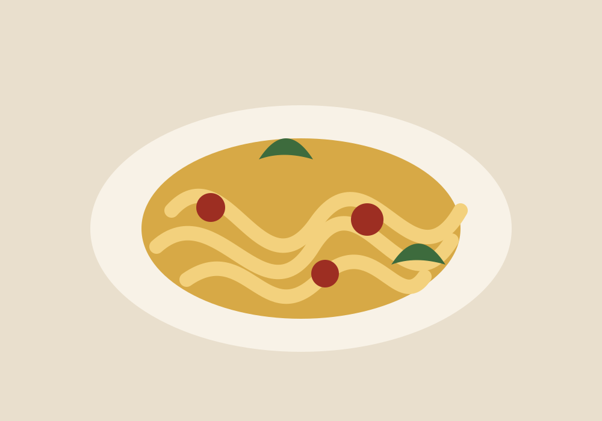
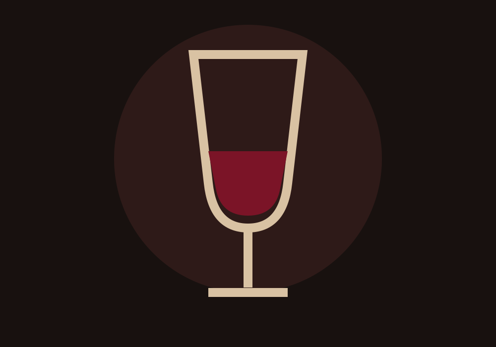
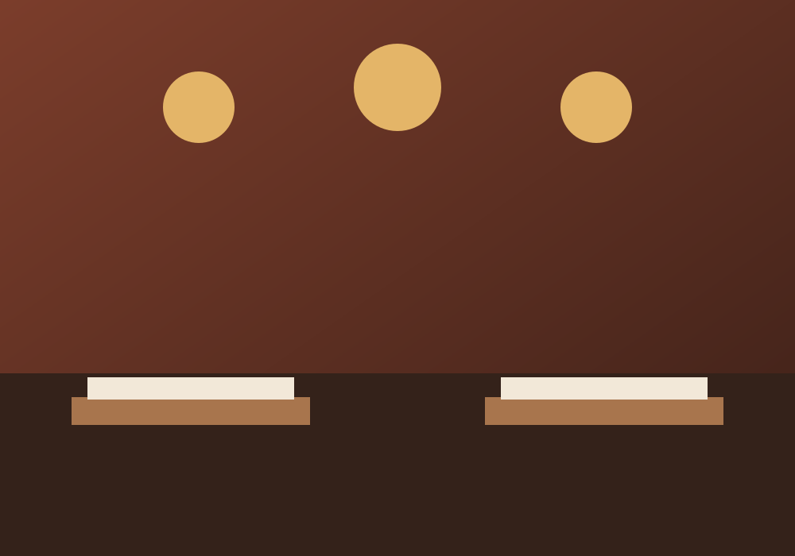

Handmade pasta, wood-fired pizza and an exceptional wine cellar in Eugene’s historic Broadway & Pearl District.
Ambrosia brings Italian cooking into conversation with the Pacific Northwest. Seasonal produce, handmade pasta, local meats and seafood meet the glow of a custom wood-fired oven imported from Naples.
Whether you are settling in for date night, sharing pizza with family or gathering in the Cellar Room, the table is ready.
Discover Private Dining
Three clear paths help guests find the experience they came for.

Curated bottles, guided dinners and spaces made for lingering conversations.
Plan a gathering →
Tuesday through Friday, 4:30–6:00 pm. A polished early-evening ritual.
Hours & directions →“The soul of the restaurant is the wood-fired oven, but the reason guests return is the feeling around the table.”